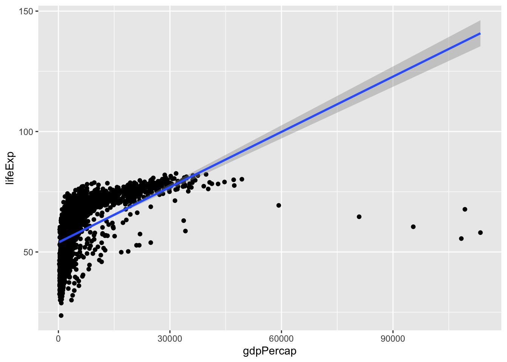
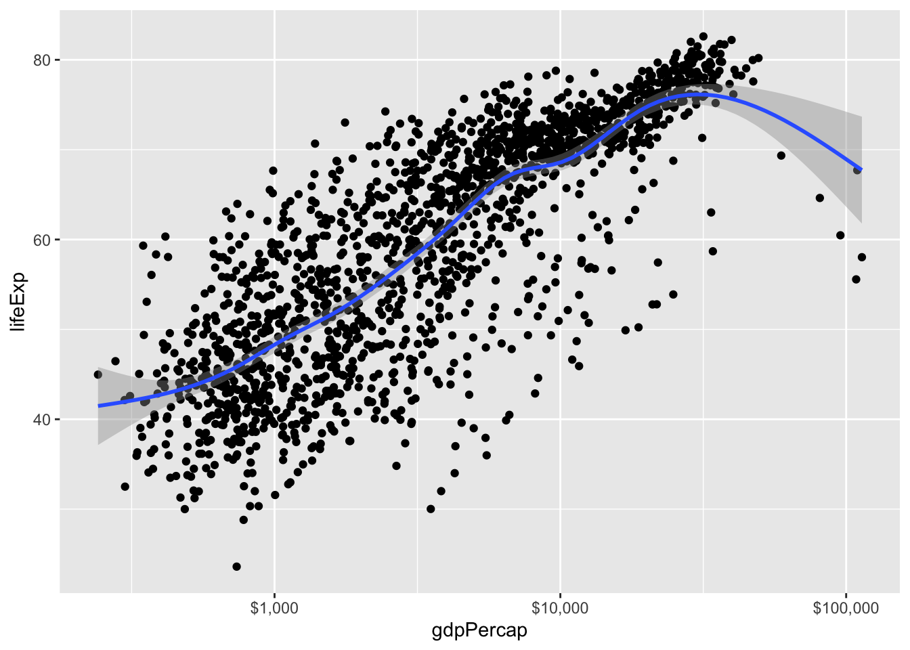
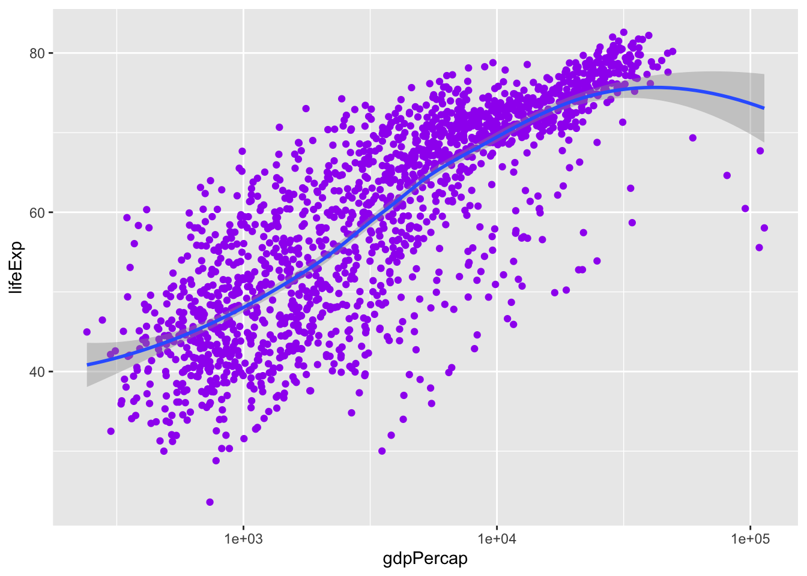
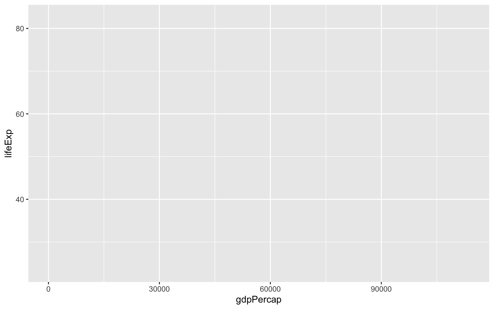
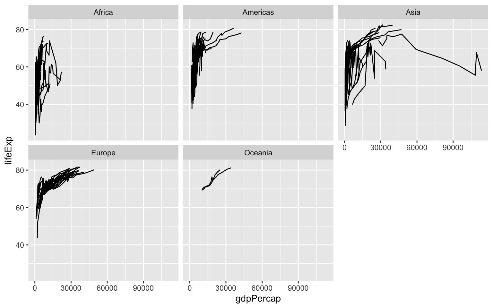
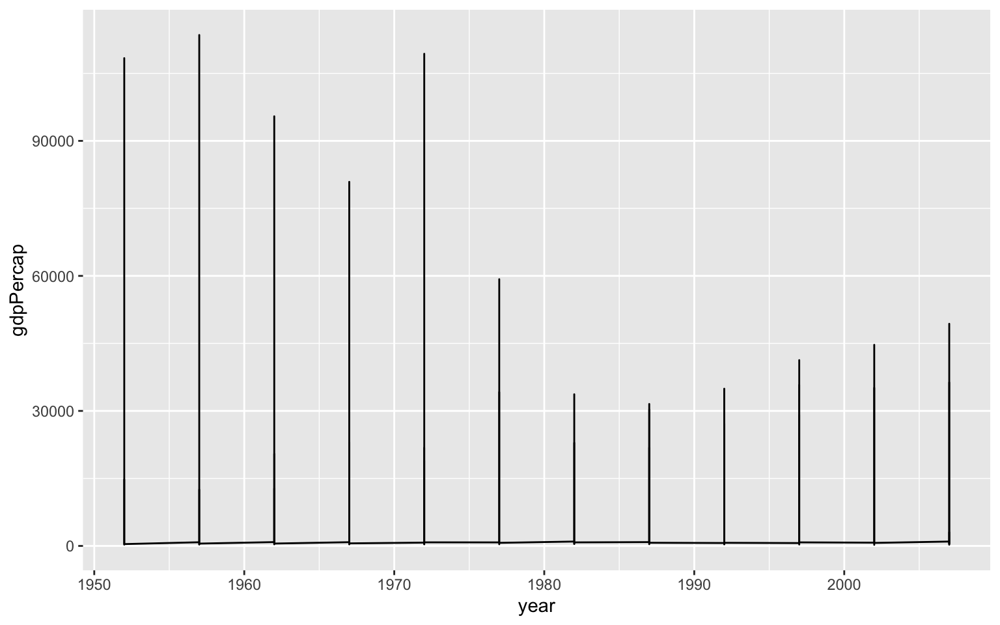

Data Visualization Notes
YOUR_NAME
2022-02-08
Data Visualization Notes
This is a starter RMarkdown template to accompany Data Visualization (Princeton University Press, 2019). You can use it to take notes, write your code, and produce a good-looking, reproducible document that records the work you have done. At the very top of the file is a section of metadata, or information about what the file is and what it does. The metadata is delimited by three dashes at the start and another three at the end. You should change the title, author, and date to the values that suit you. Keep the output line as it is for now, however. Each line in the metadata has a structure. First the key (“title”, “author”, etc), then a colon, and then the value associated with the key.
This is an RMarkdown File
Markdown is a simple formatting syntax for authoring HTML, PDF, and MS Word documents. For more details on using R Markdown see http://rmarkdown.rstudio.com.
When you click the Knit button a document will be generated that includes both content as well as the output of any embedded R code chunks within the document. A code chunk is a specially delimited section of the file. You can add one by moving the cursor to a blank line choosing Code > Insert Chunk from the RStudio menu. When you do, an empty chunk will appear:
library(gapminder)
library(tidyverse)## ── Attaching packages ────────────────────────────────────────────────────────────────────────────────── tidyverse 1.3.1 ──## ✓ ggplot2 3.3.5 ✓ purrr 0.3.4
## ✓ tibble 3.1.6 ✓ dplyr 1.0.7
## ✓ tidyr 1.1.4 ✓ stringr 1.4.0
## ✓ readr 2.1.1 ✓ forcats 0.5.1## ── Conflicts ───────────────────────────────────────────────────────────────────────────────────── tidyverse_conflicts() ──
## x dplyr::filter() masks stats::filter()
## x dplyr::lag() masks stats::lag()library(skimr)
skim(gapminder)| Name | gapminder |
| Number of rows | 1704 |
| Number of columns | 6 |
| _______________________ | |
| Column type frequency: | |
| factor | 2 |
| numeric | 4 |
| ________________________ | |
| Group variables | None |
Variable type: factor
| skim_variable | n_missing | complete_rate | ordered | n_unique | top_counts |
|---|---|---|---|---|---|
| country | 0 | 1 | FALSE | 142 | Afg: 12, Alb: 12, Alg: 12, Ang: 12 |
| continent | 0 | 1 | FALSE | 5 | Afr: 624, Asi: 396, Eur: 360, Ame: 300 |
Variable type: numeric
| skim_variable | n_missing | complete_rate | mean | sd | p0 | p25 | p50 | p75 | p100 | hist |
|---|---|---|---|---|---|---|---|---|---|---|
| year | 0 | 1 | 1979.50 | 17.27 | 1952.00 | 1965.75 | 1979.50 | 1993.25 | 2007.0 | ▇▅▅▅▇ |
| lifeExp | 0 | 1 | 59.47 | 12.92 | 23.60 | 48.20 | 60.71 | 70.85 | 82.6 | ▁▆▇▇▇ |
| pop | 0 | 1 | 29601212.32 | 106157896.74 | 60011.00 | 2793664.00 | 7023595.50 | 19585221.75 | 1318683096.0 | ▇▁▁▁▁ |
| gdpPercap | 0 | 1 | 7215.33 | 9857.45 | 241.17 | 1202.06 | 3531.85 | 9325.46 | 113523.1 | ▇▁▁▁▁ |
# if there is no missing value,
# n_missing = 0
# complete_rate = 1
p <- ggplot(data = gapminder)
p <- ggplot(data = gapminder, mapping = aes(x = gdpPercap, y = lifeExp))
# linear regression
p + geom_point() + geom_smooth(method="lm")## `geom_smooth()` using formula 'y ~ x'
# x axis (log 10)
p + geom_point() + geom_smooth(method = "gam") + scale_x_log10(labels = scales::dollar)## `geom_smooth()` using formula 'y ~ s(x, bs = "cs")'
p <- ggplot(data = gapminder,
mapping = aes(x = gdpPercap, y = lifeExp))
p + geom_point(color = "purple") +
geom_smooth(method = 'loess') +
scale_x_log10()## `geom_smooth()` using formula 'y ~ x'
# Mapping aesthetic vs setting them
p + geom_point(alpha = 0.3) +
geom_smooth(color = 'orange', se = F, size = 8, method = 'lm') +
scale_x_log10()## `geom_smooth()` using formula 'y ~ x'
Code chunks are delimited by three backticks (found to the left of the 1 key on US and UK keyboards) at the start and end. The opening backticks also have a pair of braces and the letter r, to indicate what language the chunk is written in. You write your code inside the code chunks. Write your notes and other material around them, as here.
Before you Begin
To install the tidyverse, make sure you have an Internet connection. Then manually run the code in the chunk below. If you knit the document if will be skipped. We do this because you only need to install these packages once, not every time you run this file. Either knit the chunk using the little green “play” arrow to the right of the chunk area, or copy and paste the text into the console window.
## This code will not be evaluated automatically.
## (Notice the eval = FALSE declaration in the options section of the
## code chunk)
my_packages <- c("tidyverse", "broom", "coefplot", "cowplot",
"gapminder", "GGally", "ggrepel", "ggridges", "gridExtra",
"here", "interplot", "margins", "maps", "mapproj",
"mapdata", "MASS", "quantreg", "rlang", "scales",
"survey", "srvyr", "viridis", "viridisLite", "devtools")
install.packages(my_packages, repos = "http://cran.rstudio.com")Set Up Your Project and Load Libraries
To begin we must load some libraries we will be using. If we do not load them, R will not be able to find the functions contained in these libraries. The tidyverse includes ggplot and other tools. We also load the socviz and gapminder libraries.
Notice that here, the braces at the start of the code chunk have some additional options set in them. There is the language, r, as before. This is required. Then there is the word setup, which is a label for your code chunk. Labels are useful to briefly say what the chunk does. Label names must be unique (no two chunks in the same document can have the same label) and cannot contain spaces. Then, after the comma, an option is set: include=FALSE. This tells R to run this code but not to include the output in the final document.
When you click the Knit button a document will be generated that includes both content as well as the output of any embedded R code chunks within the document. You can embed an R code chunk like this:
gapminder## # A tibble: 1,704 × 6
## country continent year lifeExp pop gdpPercap
## <fct> <fct> <int> <dbl> <int> <dbl>
## 1 Afghanistan Asia 1952 28.8 8425333 779.
## 2 Afghanistan Asia 1957 30.3 9240934 821.
## 3 Afghanistan Asia 1962 32.0 10267083 853.
## 4 Afghanistan Asia 1967 34.0 11537966 836.
## 5 Afghanistan Asia 1972 36.1 13079460 740.
## 6 Afghanistan Asia 1977 38.4 14880372 786.
## 7 Afghanistan Asia 1982 39.9 12881816 978.
## 8 Afghanistan Asia 1987 40.8 13867957 852.
## 9 Afghanistan Asia 1992 41.7 16317921 649.
## 10 Afghanistan Asia 1997 41.8 22227415 635.
## # … with 1,694 more rowsThe remainder of this document contains the chapter headings for the book, and an empty code chunk in each section to get you started. Try knitting this document now by clicking the “Knit” button in the RStudio toolbar, or choosing File > Knit Document from the RStudio menu.
Get Started
url <- "https://cdn.rawgit.com/kjhealy/viz-organdata/master/organdonation.csv"
organs <- read_csv(file = url)## Rows: 238 Columns: 21## ── Column specification ───────────────────────────────────────────────────────────────────────────────────────────────────
## Delimiter: ","
## chr (7): country, world, opt, consent.law, consent.practice, consistent, ccode
## dbl (14): year, donors, pop, pop.dens, gdp, gdp.lag, health, health.lag, pubhealth, roads, cerebvas, assault, external,...##
## ℹ Use `spec()` to retrieve the full column specification for this data.
## ℹ Specify the column types or set `show_col_types = FALSE` to quiet this message.library(gapminder)
gapminder## # A tibble: 1,704 × 6
## country continent year lifeExp pop gdpPercap
## <fct> <fct> <int> <dbl> <int> <dbl>
## 1 Afghanistan Asia 1952 28.8 8425333 779.
## 2 Afghanistan Asia 1957 30.3 9240934 821.
## 3 Afghanistan Asia 1962 32.0 10267083 853.
## 4 Afghanistan Asia 1967 34.0 11537966 836.
## 5 Afghanistan Asia 1972 36.1 13079460 740.
## 6 Afghanistan Asia 1977 38.4 14880372 786.
## 7 Afghanistan Asia 1982 39.9 12881816 978.
## 8 Afghanistan Asia 1987 40.8 13867957 852.
## 9 Afghanistan Asia 1992 41.7 16317921 649.
## 10 Afghanistan Asia 1997 41.8 22227415 635.
## # … with 1,694 more rowsggplot(data = gapminder,
mapping = aes(x = gdpPercap, y = lifeExp))
p + geom_line(aes(group=country)) + facet_wrap(~ continent)
Make a Plot
p <- ggplot(data = gapminder, mapping = aes(x = year, y = gdpPercap))
p + geom_line()